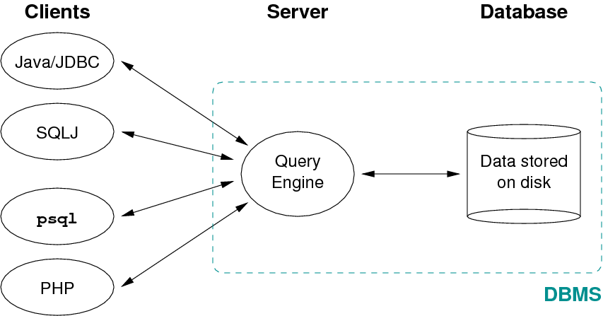
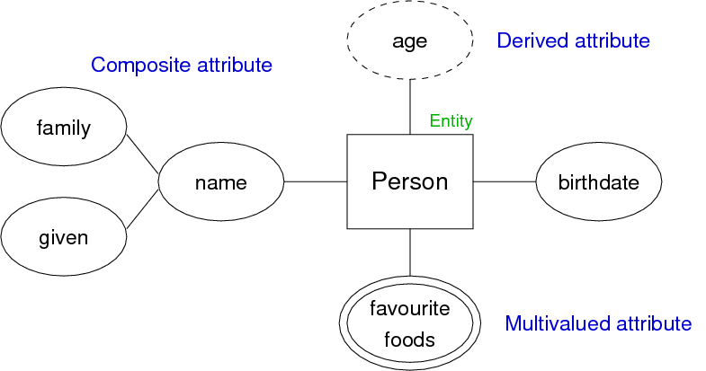
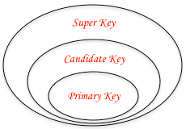
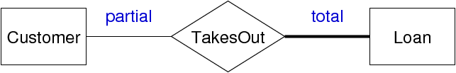
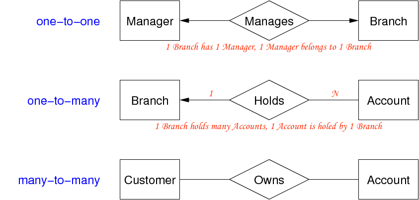
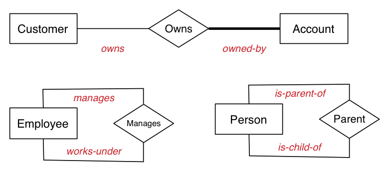
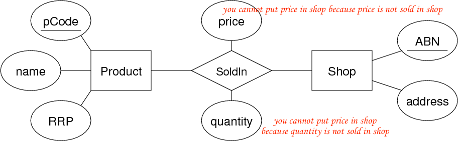
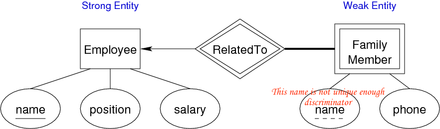
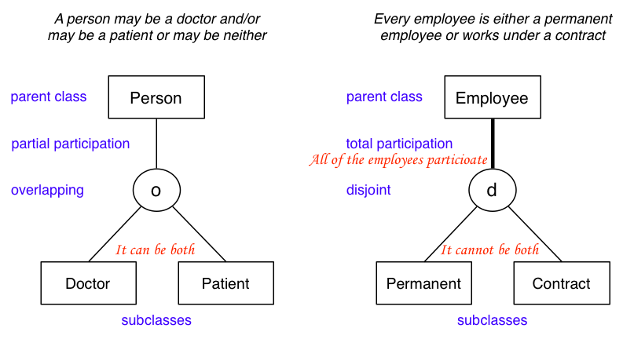

COMP9311 Lecture 1
Home Computing
Software versions that we'll be running this semester:
PostgreSQL 9.0
PHP 5.3
Apache 1/2
If we install them at home:
get versions "close to" these
test all work at CSE before submitting
Alternative to installing at home:
run them on the CSE servers (grieg) as you would in labs
use e.g. puttyto log in to a CSE server from home
PostgreSQL via puttyok, since command-line based
to use Apache at CSE from home may require use of VPN
Database System Architechure
The typical environment for a modern DBMS is:

SQL queries and result tuples travel along the client ↔ server links
Some Design Ideas of ER Diagram
star simple ... evolve design as problem better understood
identify objects, then relationships
most disigns invole kinds of people
Keywords in requiremnts suggest data. Nounes are the subjects (data), and verbs are the relationships
don't confuse operations with relationships
consider all possible data, not just what's available
Quality of Designs
There is no singhle "best" desigh for a given application
Most important aspect of a design (data model)
correctness (satisfies requirements accurately)
completeness (all reqs covered, all assumptions explicit)
consistency (no contradictory statements)
Potential inadequacies in a design:
omits information that needs to be included
contains redundant information (⇒ inconsistency)
leads to an inefficient implementation
violates syntactic or semantic rules of data model
Entity-Relationship (ER) Modelling
The world is viewd as a collection of inter-related entites
ER has three major modelling constructs:
attribute: data item descibing a property of interest
entity: collection og attributes describing object of interset
relationship: association between entities (objects)
The ER model is not a standard, so many variations exist!
Entity-Relationship (ER) Diagram
ER diagrams are a graphical tool for data modelling.
An ER diagram consists of:
a collection of entit set definitions
a collection of relationship set definition
attributes associated with entity and relationship sets
connections between entity and relationship sets

multiple attribute - double ellipse.
a person can have multiple favourite foods
composite attribute - ellipse
a person can have only one family name and one given name
derived attribute - dashed ellipse
one attribute is calculated from another attribute. The derived attribute may not be stored in the database but rather calculated using algorithm.
Entity Sets
An entity set can be viewed as either
a set of entities with the same set of attributes (extensional view of entity set)
an abstract descripion of a class of entites (intensional view os entity set)
An entity may belong to more than one entity sets.
"Data" in a database ≅ collection of (extensional) entity sets.
Keys
key (superkey) is a set of attributes
whose set of values are distinct over entity set
natural (e.g. name + address + birthday) or artificial (s.g. SSN)
A candidate key is any superkey such that no proper subset of its attributes is also a superkey
A primary key is one candidate key chosen by the database designer
|

|

Relationship Sets
Relationship: an association among several entities.
E.g. Customer#9876 is the owner of Account#12345.
Relationship set: collection of relationships of the same type.
Degree: # of entities involved in reln, in ER model ≥ 2
Cardinality: # of associated entities on each side of reln
Participation: # of associated entities be in the reln
Example: relationship participation

Examples: relationship cardinality

The role of aeach entity in a relationship is usually implicit
If ambiguity arises, can explicitly name the role

Role names become more important when developing SQL schemas
In some cases, a relationship nees associated attriutes.

(Price and quantity are related to products in a particular shop)
Sometims, a shop is an entity or an attribute depends on how much imformation we need from that shop.
Weak Entity Sets
Weak entities
exist only because of association whih strong entities.
have no key of their own, have a discriminator

Subclasses and Inheritance
A subclass of an entity set A is a set of entities:
with all attributes of A, plus (usually) it own attributes
that is involved in all of A's relationships, plus its own
Properties of subclass:
overlapping or disjoint
total or partial
Special case: entity has one subclass ("B is-a A" specialisation)

Design Using the ER Model
ER model: simple, powerful set of data modelling tools.
Some considerations in designing ER models:
should an "object" be represented by an attribute or entity?
is a "concept" best expressed as an entity or relationship?
should we use n-way relnship or several 2-way relnships?
is an "object" a strong or weak entity? (usually strong)
are there subclasses/superclasses within the entities?
ER diagrams are typically too large to fit on a single screen.
One commonly used strategy:
define entity sets separately, showing attributes
combine entitities and relationships on a single diagram
if very large design, may use several linked diagrams
Exercise
Exercise 1: GMail Data Model
Consider the Google Mail system.
Develop an informal data model for it by identifying:
the data items involved (objects and their attributes)
relationships between these data items
constraints on the data and relationships
Solution
Exercise: Amazon Data Model
Consider the Amazon web site
Develop an informal data model for it by identifying:
the data items involved (objects and their attributes)
relationships between these data items
constraints on the data and relationships
Solution
Exercise 3: Medical Information
Patients are identified by an SSN, and their names, addresses and ages must be recorded.
Doctors are identified by an SSN. For each doctor, the name, specialty and years of experience must be recorded.
Each pharmacy has a name, address and phone number. A pharmacy must have a manager.
A pharmacist is identified by an SSN, he/she can only work for one pharmacy. For each pharmacist, the name, qualification must be recorded.
For each drug, the trade name and formula must be recorded.
Every patient has a primary physician. Every doctor has at least one patient.
Each pharmacy sells several drugs, and has a price for each. A drug could be sold at several pharmacies, and the price could vary between pharmacies.
Doctors prescribe drugs for patients. A doctor could prescribe one or more drugs for several patients, and a patient could obtain prescriptions from several doctors. Each prescription has a date and quantity associated with it.
People subclasses
Relationships